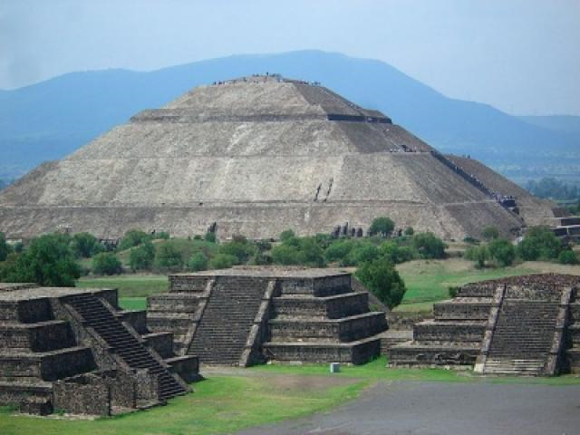
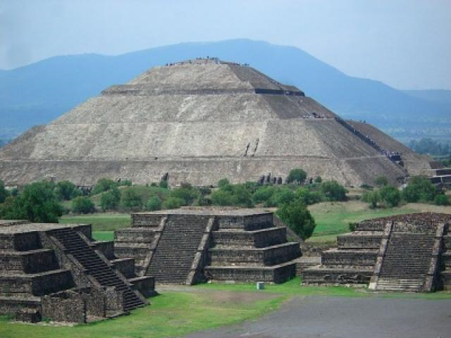
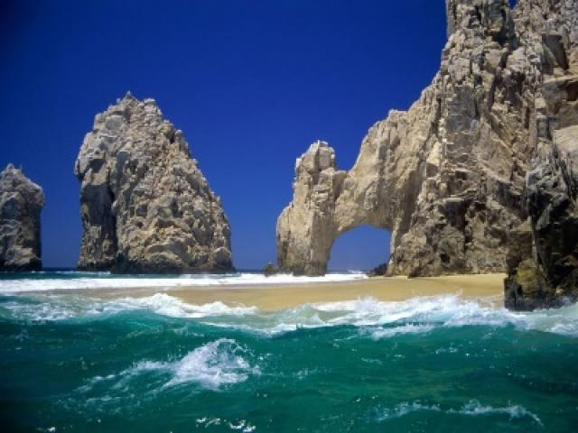

Ven y enamorate de las bellezas que tiene México.


 

El Arco de Cabo San Lucas (Tijuana)

En este famoso arco, localizado en el Cabo San Lucas, se realizas diferentes excursiones en lanchas con fondo de cristal para apreciar los peces de colores que viven bajo el arco, monumento natural bajo cuyas sombras se juntan las aguas del Mar de Cortés y del Océano Pacífico y en cuya superficie rocosa habitan focas y lobos marinos.
Su clima es caluroso, con una temperatura de 26°C casi todo el año.
Deportes Acuáticos
Durante el verano podrás disfrutar de la práctica del buceo, del kayak y de la pesca deportiva.
Corredor Turístico
Este es un tramo de 33 kilómetros, entre Cabo San Lucas y San José del Cabo, en donde se ubican los hoteles más lujosos de la región.
En este corredor encontrarás restaurantes gourmet, excelentes campos de golf, y hermosas playas.

Perfil del Autor
Scrollspy es un pulgin jQuery que hace seguimiento de ciertos elementos y en cual elemento esta centrada actualmente la pantalla del usuario. Nuestro demo principal de esto es nuestra tabla de contenidos en cada pagina de la documentación a lado derecho de la pagina. Al hacer clic en estos enlaces también se desplazará a la página de ese elemento.